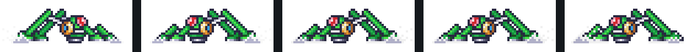
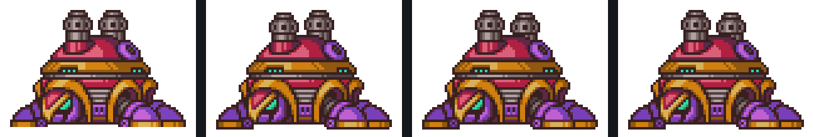
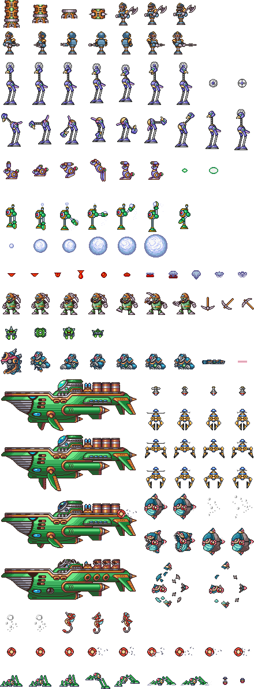
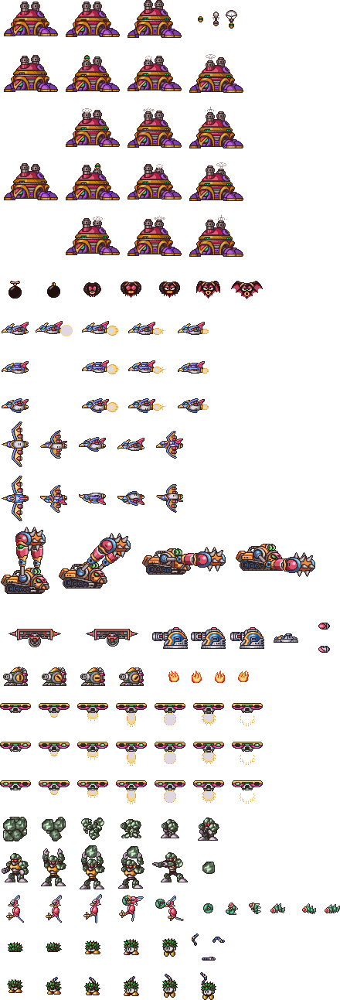
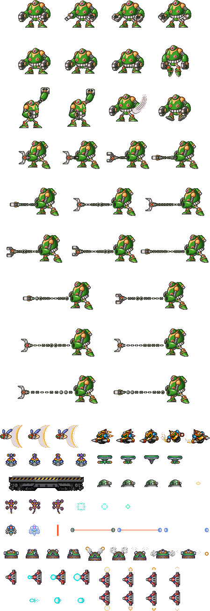

Method in one sentence. For each recon frame, read
the SNES OAM table directly (128 entries, each tagged with its
palette row 0–7). Union the on-screen bboxes of every OAM entry
whose palette row matches the target. Intersect that mask with the
CGRAM color set for the same palette row (bit-replication 5→8 bit
conversion, matching Mesen output). Cross-correlate the resulting
silhouette against every canonical reference sheet via 2D FFT; pick
the top match by Jaccard (intersection ÷ union).
Confirmed matches
lo_enemy_b20 — green frog (OBJ pal 4)
PERFECT 1.000
Hopping ground enemy. Matches
enemies_31593.png
bottom region. David-confirmed visually.

- palette row
- 4
- on-screen bbox
- 60×24 @ (27, 108), full silhouette (fully on-screen, not edge-clipped)
- best match
enemies_31593.png, bottom of sheet 2, orientationnormal- silhouette Jaccard
- 1.000 (f0300 ground pose) · f0780 jump pose scores 0.971
- sheet region
- bottom of sheet 2 (David: "green one is on enemies 2 at the very bottom")
lo_enemy_b5B — big stationary right-side enemy (OBJ pal 7)
STRONG 0.972
Static 78×55 sprite at screen-x 160 every frame, 18 OAM slots.
Matches
enemies_31594.png top. David-confirmed
visually: "cant spot the difference, but it is visibly the
same enemy."

- palette row
- 7
- on-screen bbox
- 78×55 @ (160, 61), stationary across the entire recon
- best match
enemies_31594.png@ (x=1, y=67), orientationnormal- silhouette Jaccard
- 0.972 (0.979 on f0780 frame)
- sheet region
- top of sheet 3 (David: "other one is on enemies 3 at the top")
- also fires
- pal-7 projectiles at ~23×30 (tracked in
spawns.jsonas satellite blobs)
Insight: multi-palette, multi-enemy
Both enemies coexist on one screen at f0660 — the frog (pal 4) lands on the ground while the stationary big enemy (pal 7) fires its missile. This proves a recon frame can carry several independent enemies under different OBJ palette rows. Previous pipeline assumed one enemy class per capture; the new extractor sweeps every palette row independently.
Related corrections baked into the tooling:
-
bgr555_to_rgbnow uses bit-replication(c<<3)|(c>>2)instead of linearc*255/31. Off-by-one on every channel was breaking exact color comparisons against screenshots. -
spawns.jsonnote "pal 2 = HUD/HP bar" was wrong. Pal 2 consistently produces a 22×92 block at (5, 8) every frame with 7 OAM slots — that's X's body merged with the HUD, not a standalone HUD palette. - Color-keying the screenshot alone produces false positives because palettes share dark colors. OAM is authoritative for "which pixels are which palette."
Canonical reference sheets
Full MMX1 enemy sheets from The Spriters Resource. Click any to open full-size.

Enemies 1 · sheet 31592

Enemies 2 · sheet 31593 —
lo_enemy_b20 at bottom
Enemies 3 · sheet 31594 —
lo_enemy_b5B at top
Enemies 4 · sheet 31595
Tooling
tools/oracle/post/extract_enemy_from_oam.py— OAM-driven per-palette extractor with CGRAM color refinement.tools/oracle/post/sprite_reference_matcher.py— FFT cross-correlation against every reference sheet, normal + horizontal-flip orientations, per-pixel color-disagreement report.tools/oracle/post/extract_enemy_from_screenshot.py— earlier color-key extractor, kept as a fallback for frames without an OAM dump.